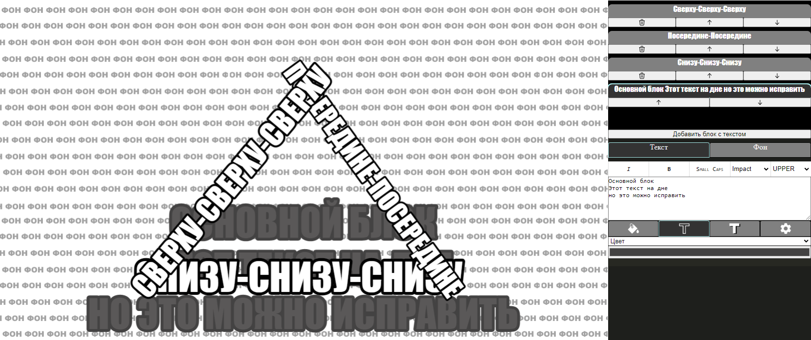
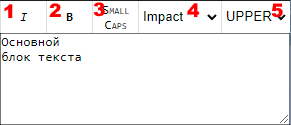
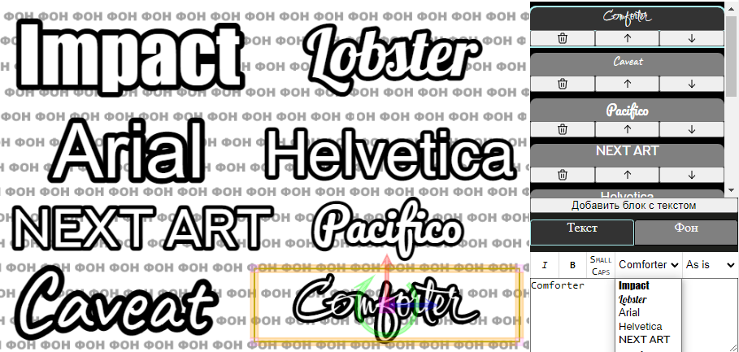

Memaker - онлайн-редактор мемов, в планах похожий на смесь GIMP и Power Point, основная цель которого заключается в автоматизации рутины при создании мемов.
| Сочетание клавиш | Действие | Условия |
|---|---|---|
| Ctrl + Z | Отмена действия (Undo) | |
| Ctrl + Shift + Z | Повтор отменённого действия (Redo) | |
| Ctrl + V | Вставить изображение из буфера обмена в качестве фона текущего фрейма | Когда ни одно из текстовых полей ввода не в фокусе |
| Arrow Left/Arrow Right | Сменить текущий фрейм на следующий | Когда ни одно из текстовых полей ввода не в фокусе |
| Shift, Ctrl | Переключают режимы модификаторов текстовых блоков | Во время модификации блока (масштабирование, перемещение, поворот) |
ПКМ по рендеру текущего фрейма позволяет скопировать или сохранить его (зависит от браузера). Элементы UI (границы блоков) при этом не будут скопированы.
Первоначальная задача: удобное размещение текста с обводкой на многокартиночных мемах. Поэтому проект мема состоит из нескольких фреймов. Внутри одного фрейма может быть фоновая картинка, основной текст и произвольное количество текстовых блоков.
Интерфейс состоит из трёх секций.
Фрейм - это одна картинка на фоне, один основной текстовый блок и набор дополнительных текстовых блоков. Похоже на слайды в презентациях.
По умолчанию в качестве фона у фрейма оказывается одна из заглушек. Фон можно заменить следующими способами:
Ctrl + V.Текстовые блоки бывают двух видов: основной и дополнительный. Они отличаются позиционированием и подбором размера шрифта.
Размер текста в блоках подбирается автоматически, исходя из типа блока, перенос текста на новую строку выполняется пользователем.
Выбирать, добавлять, удалять и менять порядок блоков можно на панели справа. От порядка блоков зависит их отрисовка.
При создании нового текстового блока в него копируется стиль текущего.

Часто используемые наборы настроек текста вынесены в пресеты, которые применяются к текущему блоку при выборе из селектора.

На панели над вводом текста содержатся настройки шрифта
UPPER), все строчными (lower) или как написано (As is).Текущий набор шрифтов:

Под вводом текста есть набор вкладок для настройки отрисовки текста.
Заливка текста и обводки настраиваются идентично: они могут быть отключены, залиты монотонным цветом или паттерном из набора.
Тень может быть выключена, если же она включена, то её отбрасывает как сам текст, так и его обводка. У неё можно настроить цвет, сдвиг и размытие.
Каждый фрейм содержит неудаляемый текстовый блок снизу, чьё расположение вычисляется автоматически так, чтобы соблюдались отступы от краёв - отступ снизу зависит от подобранного размера шрифта.
Если отступы по краям слишком маленькие, пока что можно либо добить по краям пробелами, либо заменить на дополнительный блок.
Дополнительные блоки могут быть созданы с помощью кнопки под списком текстовых блоков, иметь произвольный размер, позицию и поворот.
| N | Модификатор | Ctrl | Shift |
|---|---|---|---|
| 1 | Изменение ширины/высоты симметрично относительно центра | Ассиметрично | С шагом 10 пикселей |
| 2 | Одновременное изменение ширины и высоты относительно центра | Ассиметрично | С сохранением пропорций |
| 3 | Свободное перемещение блока | - | - |
| 4 | Перемещение перпендикулярно ориентации блока | Вертикальное перемещение | С шагом 10 пикселей |
| 5 | Перемещение вдоль ориентации блока | Горизонтальное перемещение | С шагом 10 пикселей |
| 6 | Поворот | Сброс поворота в ноль | С шагом 45 градусов |
Проект мема состоит из списка фреймов. Мем можно сохранить в виде meme файла, отрендерить, выгрузить текст в csv.
Порядок фреймов влияет на их отображение в списке и именование при рендере - они будут именоваться <номер фрейма>.png. Менять порядок фреймов можно кнопками на миниатюре в списке фреймов.
Удаление фрейма возможно с помощью кнопки на его миниатюре. Это обратимое действие, как и многие другие.